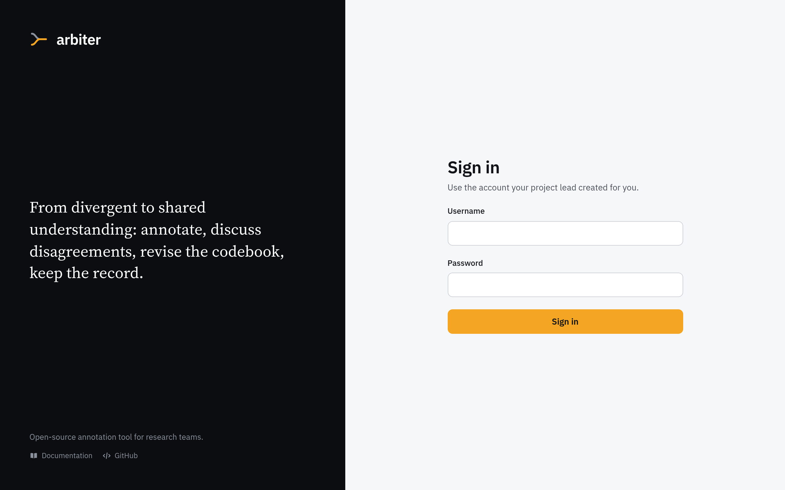
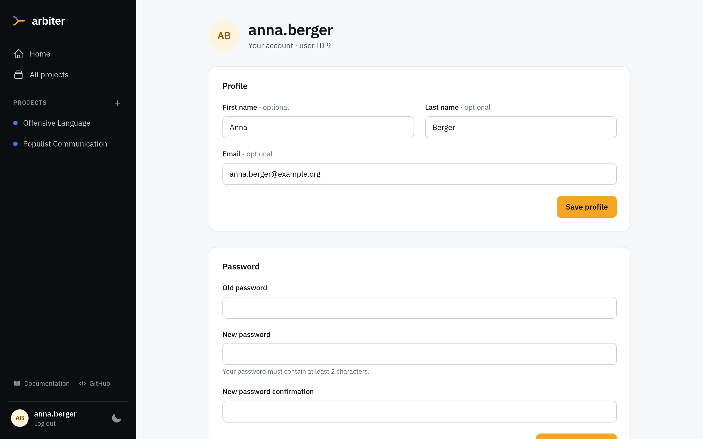

Signing in
Arbiter runs on a server, and you use it in your browser. Ask the person who runs it, or your project lead, for the address.
Your account
There are two ways to get an account:
An administrator creates it and gives you your username and password.
You create it yourself, if the administrator has opened registration on the server. The sign-in page then has a Create one link below the form. Choose a username and a password; an email address is optional. You are signed in right away.
Either way, a new account starts without projects. A project lead adds you to theirs, or you create your own.
Sign in
Enter your username and password and click Sign in. The page is the same for annotators and experts: what you see afterwards depends on your role in each project.


The sign-in page. With registration open, a Create one link appears below the button.
To sign out, click Log out below your name at the bottom of the sidebar.
Your profile
Click your name at the bottom of the sidebar to open your profile. There you can
add or change your first and last name and your email address, then click Save profile,
change your password: enter the current one and the new one twice, then click Change password. You stay signed in.
Your username cannot be changed. If you have forgotten your password, ask an administrator to set a new one.


The profile page.
The moon button next to your name switches between the light and the dark look of Arbiter.